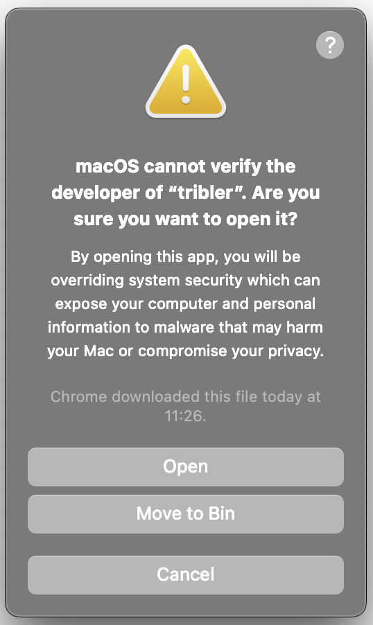

Download Tribler for MacOS

Latest release
Loading release details...
| Release Version | {{store.stableReleaseDetails.name}} |
| Release Date | {{store.stableReleaseDetails.releaseDate}} |
| Compatibility | {{store.stableReleaseDetails.compatibility}} |
| File Size | {{store.stableReleaseDetails.fileSize}} MB |
| Download Link | Download {{store.stableReleaseDetails.filename}} {{store.stableReleaseDetails.numDownloads}} downloads |
| Release Version | {{store.preReleaseDetails?.name}} |
| Release Date | {{store.preReleaseDetails.releaseDate}} |
| Compatibility | {{store.preReleaseDetails.compatibility}} |
| File Size | {{store.preReleaseDetails.fileSize}} MB |
| Download Link | Download {{store.preReleaseDetails.filename}} {{store.preReleaseDetails.numDownloads}} downloads |
Source Code
How to Install
- Download the Installer: Click the button below to download the latest version of Tribler for MacOS.
- Open the Installer: Locate the downloaded file and open it to start the installation process.
- Follow the Instructions: Follow the on-screen instructions to complete the installation.
- Launch Tribler: Once installed, open Tribler and start exploring a new world of secure, anonymous file sharing.
Known Issues
Q: "tribler" cannot be opened because the developer cannot be verified.
If you encounter this error message, follow these steps to open Tribler:
-
Locate the App
- Open Finder
- Go to Applications
-
Open Tribler
- Locate Tribler in the Applications folder
- Right click on Tribler, and click "Open". This is different from double-clicking the app icon directly, which will not provide the necessary override option.
-
Override the Security Warning
- After selecting "Open" from the context menu, a new warning message will appear stating that the app is from an unidentified developer. We do not have a separate Apple Developer ID dedicated for Tribler yet, so this is expected.
- Read the warning to ensure you still want to proceed. If you decide to continue, click "Open" in the warning dialog. This action tells macOS that you trust the app and wish to bypass the built-in security settings.
- 
-
Launch Tribler
- The application should now open without any further warnings. You only need to perform these steps the first time you open the app. Subsequent launches can be done normally, just by double-clicking the app icon.